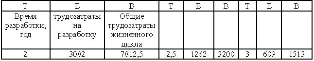

Математическая модель SLIM
Процесс управления жизненным циклом разработки ПО QSM (QSM's Software Lifecycle Management, SLIM) состоит из методологий, связанных воедино с помощью инструментов принятия решений: SLIM-Estimate©, SLIM-Control© и SLIM-Metrics©.
Инструмент SLIM-Esrimate© поддерживает оценивание и планирование, SLIM-Control© - отслеживание и прогнозирование, a SLIM-Metrics©-захват данных и анализ.
Производимое ПО (размер) = трудозатраты/время на производственном уровне.
Все методы и процессы, реализующие измерение и оценивание, взаимодействуют с коллекциями фактических данных. Преимущество, проявляющееся при использовании автоматизированного инструмента, заключается в том, что большинство из этих инструментов поддерживают "стартовые наборы" данных, основанных на наблюдаемых проектах. Исходя из этой точки зрения, можно отметить, что модель SLIM является особенно полезной в связи с тем, что могут собираться данные более чем из 5500 проектов. Программные уравнения Патнама связывают размер ПО со временем разработки и общим объемом трудозатрат.
Продукт = производительность * трудозатраты * время
S = C * K 1/3 * td 4/3
где
S - размер ПО (в LOC)
С - фактор среды, зависящий от состояния технологии
К - общие трудозатраты для всего проекта
td - ограничения времени поставки (график), выраженные в годах
Фактор среды может быть вычислен следующим образом:
C = S / K 1/3 * td 4/3
Коэффициенты К и td определяются на базе хронологических данных, относящихся к предыдущим проектам с размером S. Настраиваемое значение С может применяться для будущих оценок.
Технологическая константа С объединяет эффект использования инструментов, языков программирования, методологии, процедур гарантирования качества, стандартов и т.д. Она определяется на основе хронологических данных (прошлые проекты).
Значения технологической константы могут варьироваться от 610 до 57314. Константа С определяется, исходя из размера проекта, размера области под кривой трудозатрат, а также длительности проекта.
Оценка: С = 2000 - плохо, С = 8000 - хорошо, С = 11000 - превосходно
Например, предположим, что значение технологической константы С равно 4000 (среднее значение), а размер ПО оценивается величиной в 200000 LOG. А теперь подставим эти значения в формулу:
общие трудозатраты жизненного цикла В = (1/Т4) *(S/C)3
общие трудозатраты жизненного цикла В = (1/Т4) *(200000 /4000)3 = (1/Т4) *(50)3 трудозатраты на разработку Е = 0,3945 *В
Если период целевой разработки равен 2 годам, то
Общие трудозатраты жизненного цикла В = (1/16) * (50)3 = 7812,5 чел.-лет.
Трудозатраты на разработку Е = 0,3945* В = 3082 человеко-лет
Согласно рекомендациям Патнама, значение С для различных типов проектов будет следующим:
- внедренный в режиме реального времени - 1500;
- пакетная разработка - 4894;
- поддерживаемый и организованный - 10040.
В случае изменения времени разработки в промежутке между двумя и тремя годами, трудозатраты и производительность варьируются следующим образом (см. рис. 17.10).

Рисунок 17.10 - Изменение трудозатрат в случае изменения времени выполнения проекта с 2 до 3-х лет
Преимущества модели SLIM
- поддерживает исчерпывающий набор инструментов менеджмента разработки ПО, выполняющих поддержку программ на протяжении всего жизненного цикла;
- способствует приобретению "хороших привычек" членами команды инжиниринга и менеджмента (планирование программных проектов, отслеживание программных проектов и надзор над областями ключевых процессов на уровне 2 SEI СММ);
- предлагает эффективное планирование с добавлением значений, особенно при работе с большими проектами;
- использует линейное программирование, статистическое моделирование, оценку программ, а также техники обзора, применяемые при оценке затрат на разработку ПО (благодаря применению метода линейного программирования пользователь может "навязать" максимум затрат, максимально возможное соблюдение графика, верхние и нижние границы оценки численности персонала, а также располагать приемлемым диапазоном времени и результативными решениями по трудозатратам.);
- позволяет выбирать "разработку проекта по затратам", если пользователь выбирает ввод размера и желаемого количества человеко-месяцев; модель позволяет также оценщику затрат, понесенных при разработке ПО, выполнять следующие функции:
калибровка - точно настраивайте модель с целью представления локальной среды программной разработки путем интерпретации хронологической базы для прошлых проектов;
построение - создайте информационную модель программной системы, объединив характеристики ПО, атрибуты персонала, атрибуты компьютера и т.д.;
измерение ПО - Используется автоматизированная версия техники оценки затрат с помощью LOC;
- позволяет организации настраивать фазы жизненного цикла и ключевые стадии для данной среды;
- упрощает стратегический процесс принятия решений;
- поддерживает оптимальную политику управления персоналом в контексте среды разработки, реализует анализ типа "что-если"; генерирует отчеты и графики для: месячных профилей персонала; месячных профилей бюджета; профилей риска для затрат, графика и трудозатрат; прогнозов надежности ПО; прогнозов начальной и конечной ключевых стадий;
- поддерживает информацию о количестве дефектов; - в модели SLIM выводится минимальное время, а также соответствующие затраты (в том числе трудозатраты), включая анализ чувствительности, в ходе выполнения которого показывается, как изменяются значения, т.е. подобно тому, как варьируются оценки размеров в трех стандартных реализациях.
Недостатки модели SLIM
- ее лучше всего использовать при работе с большими проектами (когда размер кода превышает 5000 строк, трудозатраты больше 1,5 человеко-лет, а время разработки превышает 6 месяцев);
- для использования модели необходимо заранее определить размер ПО;
- оценки являются сверхчувствительными к технологическому фактору;
- модель очень чувствительна к времени поставки (td);
- модель очень чувствительна к оценке размера;
- предполагается использование жизненного цикла каскада, который не отображается на инкрементальный итеративный (спиральный) процесс разработки либо на рациональный унифицированный процесс (Rational Unified Process);
- пользователи должны помнить о необходимости добавления фаз и интегральных задач, таких как программный менеджмент;
- этот инструмент является сложным;
- вряд ли будет возможным с его помощью за 2-5 минут модифицировать модель;
- при использовании модели часто получается так, что общая сумма трудозатрат при выполнении малых проектов будет меньшей, чем трудозатраты при выполнении большого проекта. Поэтому требуется проявлять осторожность при разбиении больших проектов на меньшие структурные единицы, учитывая при этом существование интерфейсов.
Резюме
При оценке размера программного продукта, трудозатрат персонала, графика проекта и остальных затрат наблюдаются сложные взаимосвязи с процессом планирования проекта, который первый раз происходит в начале жизненного цикла разработки проекта, а затем несколько раз повторяется (обычно к концу каждой основной фазы). Точность оценки обычно далека от идеала в начале осуществления проекта, однако она улучшается по мере сбора сведений о проекте на каждой фазе, в результате чего точность оценки постоянно повышается, совпадая в итоге фактическими значениями размера, трудозатрат, графика и остальных затрат.
Необходимо оценить трудозатраты (человеко-часы) и длительность (календарные дни) выполняемого проекта, благодаря чему менеджеры смогут определять затраты на производство продукта, срок возврата инвестиций, время выхода на рынок и качество. Процесс оценки зачастую является затруднительным, поскольку проекты часто должны удовлетворять взаимоисключающим требованиям (поддержка функциональных специфических свойств наравне со специфическими требованиями к производительности, учитывая специфические затраты и график, а также некоторый желаемый уровень качества). Множество ограничений приводит к усложнению процесса оценивания. Помимо этого, оценки производятся еще до того, как будут хорошо определены спецификации. Разработка архитектурного либо высокоуровневого проекта лишь намечает понятийную область в терминах поддержки исчисляемости и тестируемости требований, даже если первая оценка предшествует подобной деятельности.
Процесс оценивания обычно относится к области навыков менеджмента проектов, которая связана с документированием планов, оценкой затрат (трудозатрат), составлением графика и выбором метрических показателей. При осуществлении всех действий в рамках менеджмента программных проектов в "игру вступает" большинство навыков из области менеджмента персонала.
Организация, которая ведет документацию, следует инструкциям и постоянно улучшает процесс оценивания, будет соответствовать требованиям относительно ключевых процессов уровня 2 SEI СММ, а также требованиям планирования программных проектов. Описание цели 1 звучит следующим образом, "Программные оценки документированы с целью использования при планировании и отслеживании программных проектов".
Наибольшей проблемой при разработке ПО является создание полнофункционального высококачественного продукта в пределах бюджета, используя спрогнозированные активы. Эти ограничения называются парадигмой оценивания ПО.
Первый шаг на пути оценки программ заключается в определении размера программного продукта. Размер продукта обычно выражается в количестве KLOC, однако могут также применяться функциональные точки, точки свойств, объектные точки либо другие единицы измерения. Обычно перед переходом к следующему шагу оценивания (оценка затрат (трудозатрат) и затрат графика) происходит преобразование других единиц измерения в единицы измерения KLOC. Для любого современного широко применяемого языка программирования разработаны таблицы преобразования, позволяющие выполнять преобразование в единицы измерения LOC. Для оценки величины размера ПО используются следующие методы: Wideband Delphi, метод аналогии, экспертных оценок, анализ функциональных точек, анализ точек свойств, анализ объектных точек и т.д.
Для оценки трудозатрат (количества труда, использованного при создании программного продукта заданного размера) применяются эмпирические, регрессионные и математические модели. В главе рассматриваются только регрессионные модели.
Все модели оценки трудозатрат зависят от размера ПО. Если определены трудозатраты (обычно выраженные в человеко-месяцах), может быть оценен график и остальные затраты программного проекта. График обычно основывается на факторах производительности, количестве доступного персонала, а также фазе распределения трудозатрат.
Регрессионная модель СОСОМО является наиболее широко используемой и известной среди всех моделей оценивания. В модели СОСОМО поддерживается три режима (органический, сблокированный и внедренный), а также три уровня сложности (базовый, промежуточный и детализованный). "Режим" просто описывает тип проекта (большой, малый, простой, сложный и т.д.). "Уровень" описывает количество входных данных - с увеличением количества входных данных улучшается точность оценки. Разработчиком модели СОСОМО является доктор Барри Боэм (Dr. Barry Boehm); свои исследования он начал в TRW, а затем продолжил их в Южно- Калифорнийском университете.
В базовой модели СОСОМО используется формула, с помощью которой рисуется кривая, аппроксимирующая набор точек данных. Затем применяется простой регрессионный анализ. В промежуточной модели СОСОМО усовершенствуется базовая модель путем добавления драйверов затрат (либо факторов среды), с помощью которых изменяется величина трудозатрат при разработке программного продукта. В детализированной модели СОСОМО поддерживаются дополнительные аналитические инструменты, а оценка производится в соответствии с уровнями структуры WBS (трехуровневая иерархия: система, подсистема, модуль). Также на каждой фазе жизненного цикла применяются корректировочные формулы. В большинстве случаев применяется промежуточная модель, поскольку в этом случае могут применяться электронные таблицы. Для получения оценок могут применяться многие автоматизированные инструменты.
Модель СОСОМО, подобно другим моделям и инструментам оценивания, имеет свои преимущества и недостатки. Ей присущи простота в применении, а также общий язык, применяемый для общения в сообществе специалистов в области планирования /менеджмента программных проектов. С другой стороны, эта модель может принести реальную пользу, если она будет калибрована на базе хронологических данных организации. Возможно одним из наибольших недостатков этой модели является то, что она основана на использовании оценки размера программного продукта, выраженной в LOC. Однако ни доктор Боэм (Dr. Boehm), ни создатели других моделей и инструментов не предложили лучшего способа для начала- даже если оценивание начинается с применения функциональных свойств вместо размеров, а трансляция функций в значения размера происходит до продолжения оценивания затрат (трудозатрат) и затрат графика.
Модель СОСОМО может быть настроена с учетом нужд конкретной организации. В процессе подобной настройки происходит калибровка на основе общедоступных хронологических данных и формул. Соответствующие сведения можно найти в классической книге Боэма, Software Engineering Economics.
Модель СОСОМО II является наиболее современной: Она поддерживает эволюционный, управляемый рисками и совместный программный процесс; языки четвертого поколения и генераторы приложений; подходы с применением коммерческих готовых продуктов и управляемого методом повторного использования ПО; подходы с разработкой ПО быстрого отслеживания; инициатив но обеспечению зрелости программных процессов.
Применяется также другая математическая модель оценивания, называемая менеджментом жизненного цикла разработки ПО (Software Lifecycle Management, SLIM). Этот инструмент имеет отношение к QSM. Благодаря использованию модели SLIM специалист по оценке может использовать анализ линейного программирования, в котором рассматриваются ограничения разработки, имеющие отношение к затратам (трудозатратам), и поддерживается помесячное распределение трудозатрат и проверка совместимости для данных, имеющих отношение к программным системам одного размера. Модель SLIM основана на анализе жизненных циклов разработки ПО, производимого в терминах распределения Рейлайха (Rayleigh), связывающего уровень квалификации персонала и затраченное время. Эта модель была разработана Патнамом